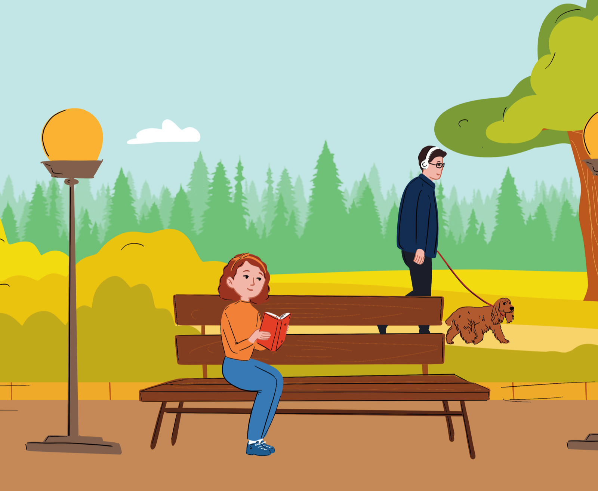

Mjedisi i vendit tim
Njeriu mbron natyrën
Era po shfletonte fjalorin e gjuhës shqipe dhe po shikonte se sa fjalë i njihte. U befasua kur pa një prej përkufizimeve për natyrën: “Natyra është mjedisi në të cilin rron njeriu në Tokë, me të gjitha qeniet e gjalla dhe sendet pa jetë”. Ndaloi të reflektonte: si mundet njeriu të dëmtojë jo vetëm mjedisin që e rrethon, por edhe mjedisin ku jetojnë edhe gjallesat e tjera.
- Sa keq bëjmë kur e ndotim rrugën, pyjet e detin, - shtoi Era, me zë të lartë. - Ja, për shembull, kur hedhim mbeturina në det apo breg, ne përveçqë e ndotim një peizazh aq mahnitës, edhe shkatërrojmë jetën e shumë gjallesave të detit. Pse i bëjmë këto veprime ne njerëzit? Pse duhet të hedhim mbeturina në tokë, në vend që t’i mbajmë ato dhe t’i hedhim në shportën e mbeturinave? Pse të mos mbjellim drurë për gjelbërimin e mjedisit, por i presim ata? Sa kushton të hedhim shishet e plastikës në shportën për riciklim?
Dua të bëj një prezantim për mbrojtjen e natyrës para shoqeve dhe shokëve të klasës, - mendoi Era, e shqetësuar për gjendjen e natyrës në vendin tonë.
